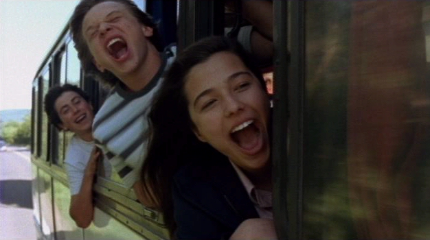

ANTES QUE O MUNDO ACABE estreia no Rio de Janeiro
Depois de ser exibido nas principais cidades do Rio Grande do Sul, Santa Catarina, Paraná e São Paulo, o filme ANTES QUE O MUNDO ACABE, produção da Casa de Cinema de Porto Alegre com direção de Ana Luiza Azevedo, finalmente chega ao Rio de Janeiro.
O filme entra em cartaz nesta sexta-feira, 17 de setembro, na sala 2 do Unibanco Arteplex Rio, na rua Praia de Botafogo 316, nos horários das 15h20 e 19h40.
Abaixo, algumas críticas já recebidas por ANTES QUE O MUNDO ACABE.
**********
"A delicadeza com que Ana Luiza Azevedo perscruta e descreve suas falíveis e belas criaturas faz lembrar o verso da canção de Arnaldo Antunes: 'Seu olhar melhora o meu'. No caso, o de nós todos, espectadores encantados com este pequeno grande filme."
(José Gerlado Couto, Folha de São Paulo)
"ANTES QUE O MUNDO ACABE trata de afeto, família, globalização, mas principalmente de responsabilidade. Graves questões éticas são colocadas sem que a diretora e seus corroteiristas abram mão da simplicidade - mas, atenção, existem formas e formas de ser simples."
(Luiz Carlos Merten, O Estado de São Paulo)
"ANTES QUE O MUNDO ACABE é um lindo filme de amadurecimento, realizado com sofisticação técnica, mas com honestidade e simplicidade na visão sobre seu universo. Ana Luiza trata seus adolescentes como iguais, respeitando cada uma de suas questões, por mais banais que elas possam parecer."
(André Miranda, O Globo)
"ANTES QUE O MUNDO ACABE é a prova de que menos é mais. A simplicidade do roteiro escrito a oito mãos é um grande acerto do novo filme de Ana Luiza Azevedo. Locações, trilha sonora e o simpático sotaque gaúcho também dão um toque mais do que especial."
(João Fernando, O Dia)
"Se à primeira vista pode parecer um filme teen, acompanhando aventuras, amizades e amores adolescentes, ANTES QUE O MUNDO ACABE revela-se aos poucos mais ambicioso e prova que, como o personagem Daniel, Ana Luiza amadureceu como diretora."
(Roger Lerina, Zero Hora)
"A diretora gaúcha Ana Luiza Azevedo, inspirada no livro homônimo de Marcelo Carneiro da Cunha, acerta em cheio no seu primeiro longa-metragem de ficção. Criativo nas entrelinhas, o filme conserva o frescor da adolescência, sob o olhar maduro de quem já passou por ela."
(Miguel Barbieri Jr., Veja São Paulo)
"Antes Que o Mundo Acabe mostra o sufoco de Daniel (Pedro Tergolina), um menino de 15 anos que precisa lidar com o fora da namorada (que não sabe se vai ou se fica), o pai desconhecido (que soube que ia) e a vida na pacata Pedra Grande (que não foi com o tempo, só ficou... na mesma). Mas é bem menos fatalista do que o título propõe. E também menos teen do que o elenco, com núcleo juvenil, possa sugerir de cara."
(Anna Virginia Balloussier, Rolling Stone)
"Há uma sensação de nostalgia que percorre o filme ANTES QUE O MUNDO ACABE. É uma melancolia de algo que está no limite, quase no fim. Isso não é por acaso. Afinal, o filme é sobre ritos de passagem, sobre jovens do interior gaúcho cuja adolescência está quase acabando e a passagem para a vida adulta é inevitável."
(Alysson Oliveira, Gazeta do Povo, Londrina)
"Ana Luiza e parceiros escrevem com uma simplicidade comovente, criando diálogos saborosos e ainda por cima garantindo uma profundidade enternecedora. ANTES QUE O MUNDO ACABE é a prova concreta da possibilidade de diálogo com o mundo adolescente sem concessões, e de forma inteligente e sensível."
(Paulo Ricardo Angelini, Argumento)
"Todos os personagens são ricamente construídos, humanos, totalmente críveis e imediatamente passíveis de forte empatia perante o público. O resultado é um filme a que se assiste com muito prazer, um sorriso no canto dos lábios, e uma lágrima no canto dos olhos."
(Celso Sabadin, 100% Vídeo)
"Daniel não é um garoto-problema, não é um nerd e também não é o mais popular de sua escola. É um carinha normal, que adora andar de bicicleta e jogos de computador. Ele tem uma família comum e problemas iguais aos de qualquer um de sua idade. Nem pense, por estes detalhes, que se trata de um filme previsível."
(Márcia Feijó, Diário Catarinense)

Eduardo Cardoso (Lucas), Pedro Tergolina (Daniel) e Bianca Menti (Mim) comendo vendo em ANTES QUE O MUNDO ACABE.
{kind=link}